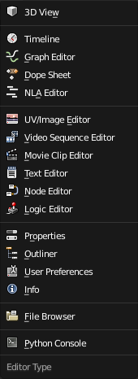

编辑器¶

The Editor selection menu.
Blender provides a number of different Editor types for displaying and modifying different aspects of data.
It is also possible to open the same Editor type multiple times to have different views on the same data.
There is also documentation on the general interface of editors.